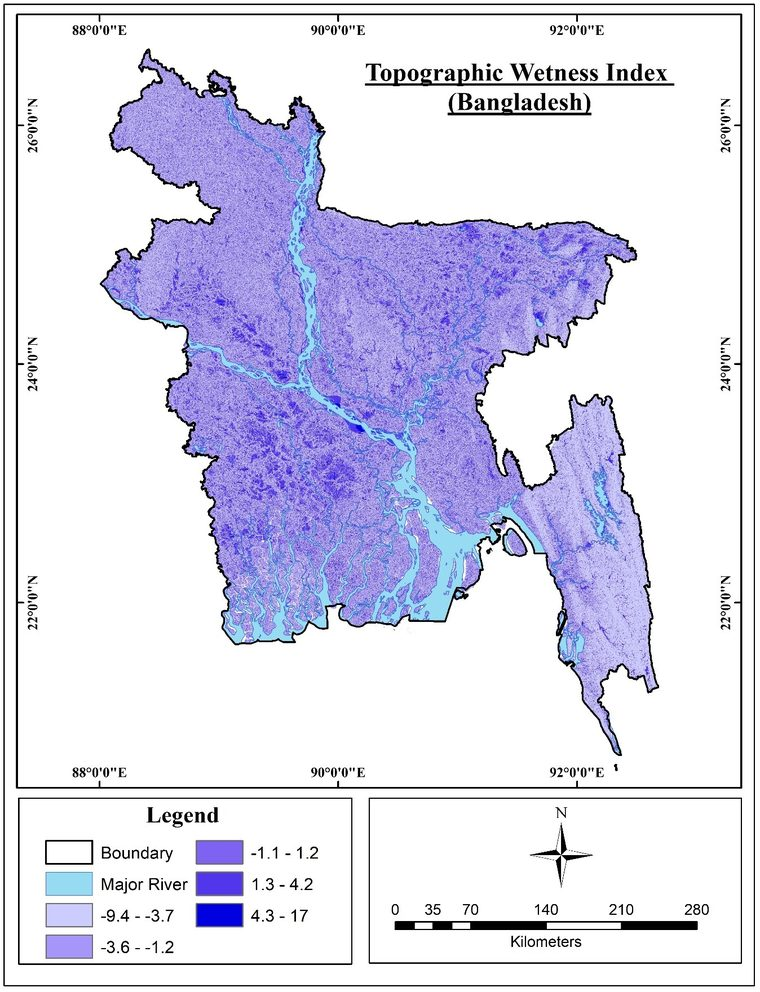
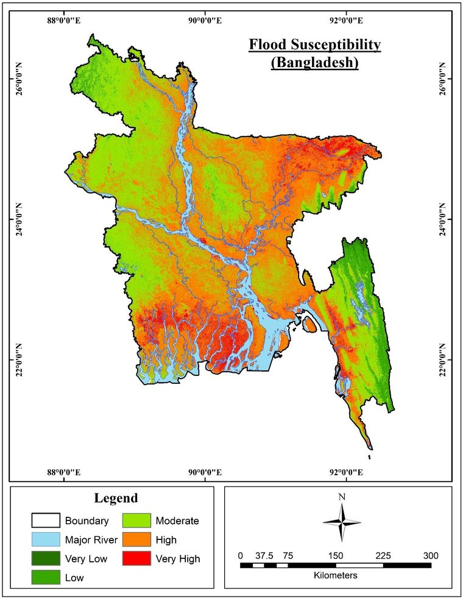

Ten factors that shape flooding
Each map is one flood conditioning factor, reclassified and weighted with the Analytic Hierarchy Process (AHP). Wetness and distance from the major rivers carried the most weight.

The result
Combining the weighted layers gave a flood susceptibility map for the whole country. More than half of Bangladesh falls in the high or very high classes. Checked against the national flood inventory, the map scored an AUC of 0.815.

Maps from my BSc dissertation, Jahangirnagar University, 2023. Supervisor: Prof. Dr. Khandakar Hasan Mahmud.
What came next
I am now extending this work to test how well expert-based, statistical and machine learning models transfer to regions they were not trained on. That study is under review at Natural Hazards and Earth System Sciences.